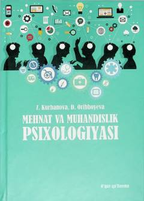

MVMehnat va muhandislik psixologiyasining asosiy masalalariga bag'ishlangan o'quv qo'llanma.
Ushbu o'quv qo'llanmada mehnat va muhandislik psixologiyasining predmeti, vazifalari hamda inson va texnika hamkorligining psixologik masalalari yoritilgan. Kitobda kasb tanlash, mehnat rejimi, professiografiya va mehnat ekspertizasiga doir muhim mavzular atroflicha tahlil qilinadi. Qolaversa, mehnat jamoasining shakllanishi va shaxslararo munosabatlar samaradorligiga e'tibor qaratilgan.